Microsol Website Redesign
UX/UI Design · User Research · Figma · Squarespace
A research-led redesign of Microsol Science's website, improving how scientific and business audiences understand the company's technology, services and expertise.
Working with a real client, the project followed a complete UX/UI process — from understanding users and restructuring information to usability testing, design iteration and implementation within Squarespace.
The Challenge
Microsol is an aerosol technology startup supporting the development of orally inhaled and nasal drug products.
The project focused on restructuring its existing website to create a more accessible and intuitive experience for pharmaceutical companies, biotech clients, investors, partners and potential funders.
This meant the challenge was not simply visual. The website needed to communicate complex scientific information while helping different audiences find the content most relevant to them.
Complex Information
Scientific information needed to remain credible while becoming easier for visitors to understand and scan.
Content Structure
Existing and new content needed to be reorganised into a clearer information hierarchy.
Multiple Audiences
Scientific, business and partnership users approached the website with different goals and expectations.
Understanding the Users
The UX process began by identifying Microsol's main audience groups and understanding what each type of user needed from the website.
Two personas represented the project's key audiences: a scientific user seeking technical credibility and capabilities, and a business-focused user looking for company value, partnerships and opportunities.
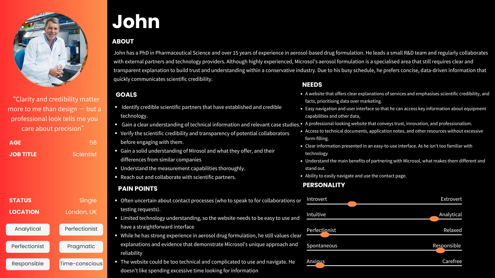
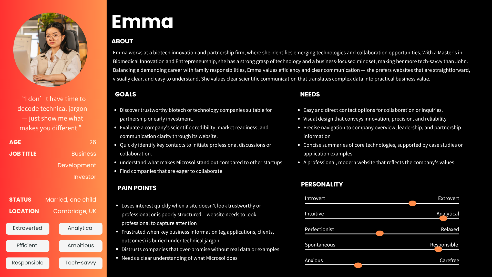
Mapping the User Experience
User journeys were developed for both personas to explore how they would move from discovering Microsol to evaluating its expertise and deciding whether to make contact.
Mapping these journeys helped reveal where clearer content, stronger navigation and better communication could support the experience.
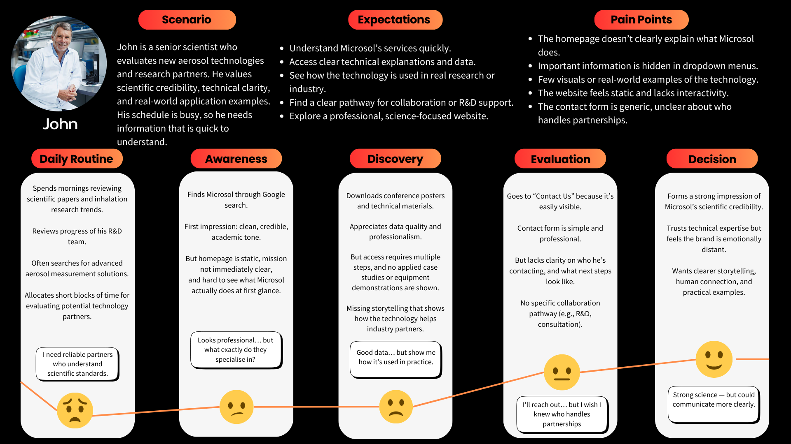
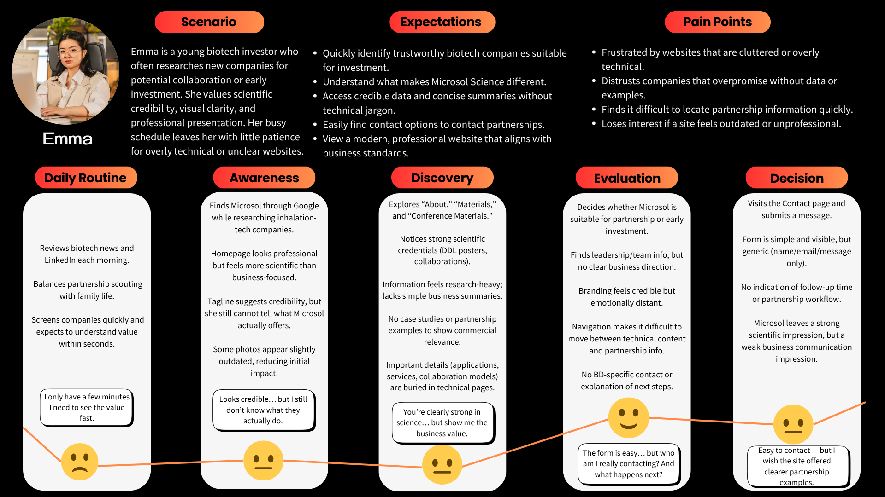
Competitor Analysis
Competitor and SWOT analysis was used to understand how comparable scientific organisations communicate complex technology, services and credibility online.
This research helped identify opportunities for Microsol to create clearer navigation and stronger visual communication while maintaining a professional scientific identity.
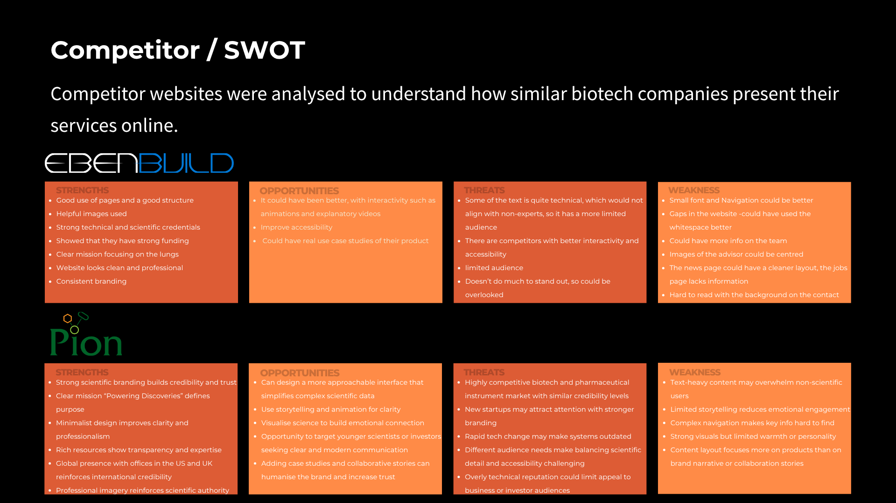
Restructuring the Content
Card sorting was used to organise existing and proposed website content into logical groups.
The resulting structure informed the information architecture and helped determine how users could move through the redesigned website more efficiently.
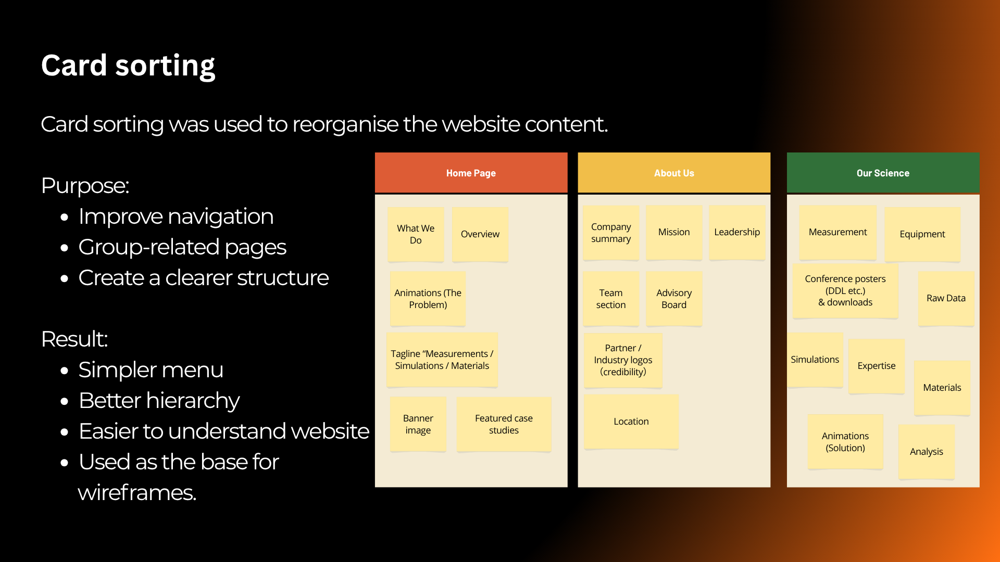
From Structure to Wireframes
The research and content structure were translated into wireframes before visual styling was introduced.
This allowed the layout and hierarchy to be evaluated around user needs before moving into higher-fidelity interface design.
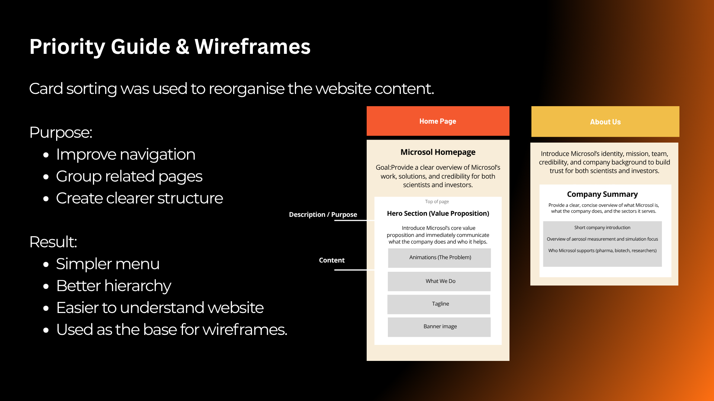
User Testing
User testing was carried out with six participants, representing both scientific and business-focused audiences.
Participants completed realistic tasks such as finding services, scientific capabilities, partnership information and contact routes.
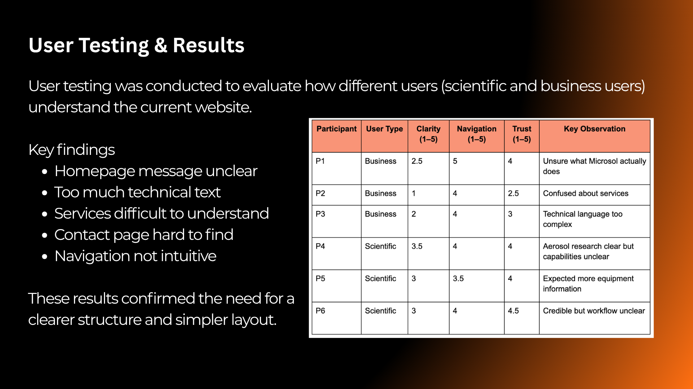
Turning Findings into Design Decisions
Testing showed that users generally viewed the website as professional, but some participants found it difficult to quickly understand what Microsol offered or locate specific information.
These findings were used to guide the next design iteration rather than treating testing as the end of the process.
The company's purpose was not immediately clear to every user.
Important content could require too many steps to locate.
Technical information could feel dense when users were scanning the website.
From Research to Interface
The research findings and wireframes were developed into higher-fidelity interface designs in Figma.
The design was refined through multiple iterations, incorporating client feedback, content requirements, usability findings and practical development constraints.
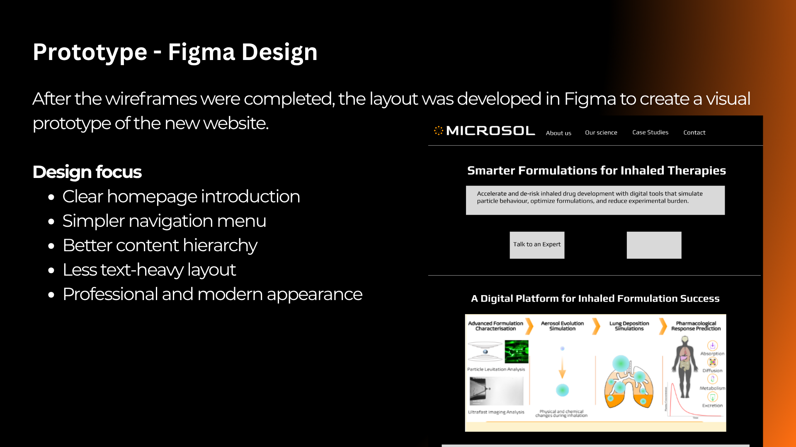
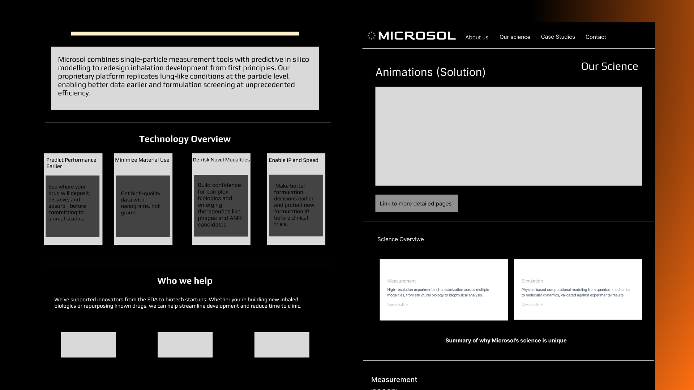
From Figma to Squarespace
Following the design stage, the new website structure and interface were implemented within Microsol's existing Squarespace environment.
The final design aimed to maintain Microsol's scientific credibility while improving navigation, content hierarchy, readability and communication across the site.
Homepage
Before → After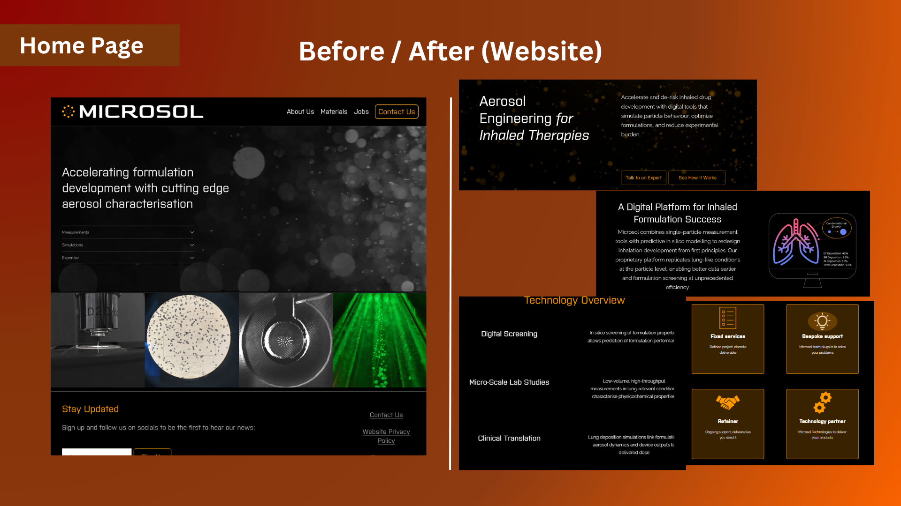
Our Science
Before → After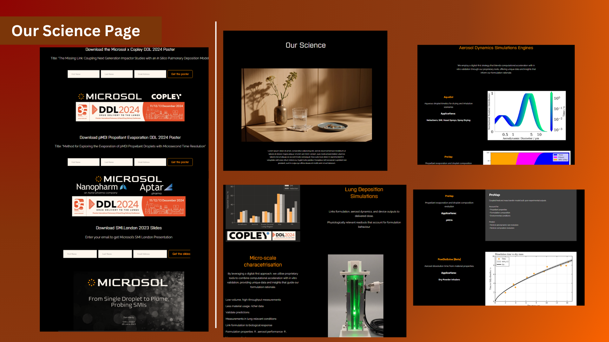
Responsive Design
The final layouts were also reviewed at mobile sizes to maintain readability, hierarchy and navigation across different screen sizes.
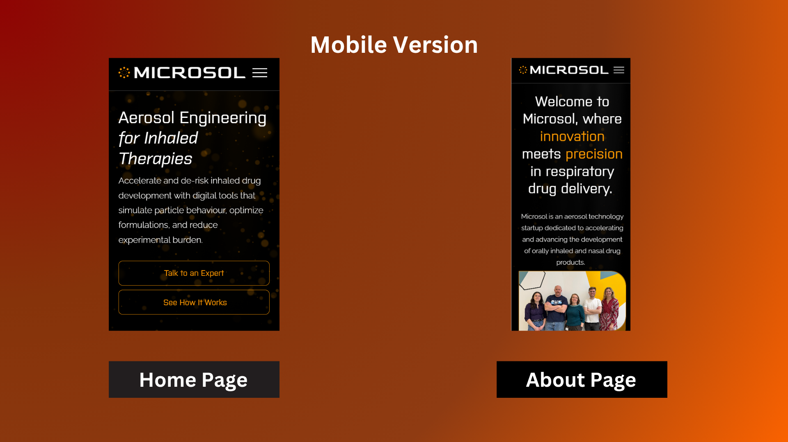
What This Project Demonstrates
Microsol allowed me to work through a complete client-led UX/UI process rather than focusing only on the final visual design.
The project developed from user research and information architecture into wireframing, testing, iteration and final implementation within a real website platform.
Personas, user journeys and competitor analysis.
Card sorting, information architecture and wireframing.
User testing, client feedback and iterative design.
Figma interface design and responsive layouts.
Squarespace implementation and practical web constraints.
Professional communication, feedback and final delivery.
Explore the Complete UX Process
View the full case study for detailed personas, competitor research, user journeys, user flows, card sorting, testing results, design iterations and development documentation.
View Full UX Case Study ↗